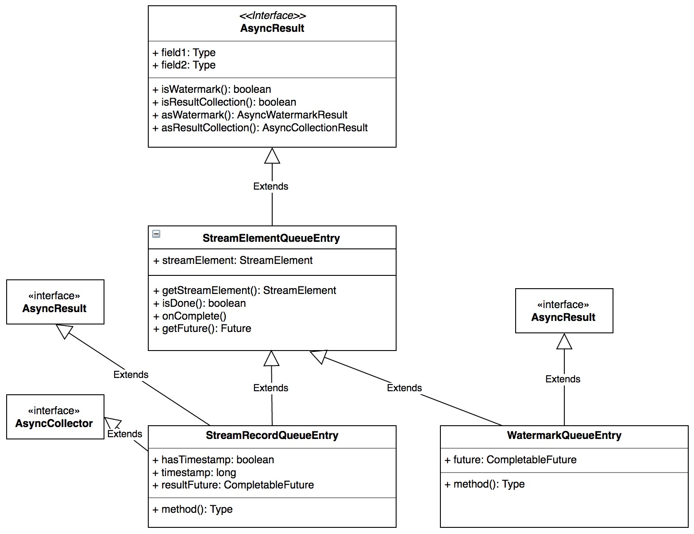
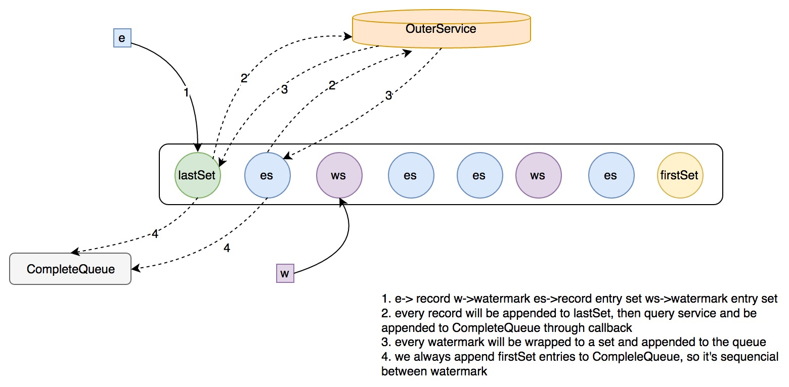

前言
AsyncIO 是由 flink 1.2 引入的新特性，其目的是优化流处理过程中外部服务访问的耗时造成的瓶颈问题。写过流处理程序的童鞋可能都遇到过这样的场景：如果每条消息都要访问一次外部服务，并且一次 IO 时间较长【e.g 大于 20ms】；亦或者每条消息访问多个外部服务：比如 redis 过滤后写到最终输出，比如双写下游服务等。 这时候整个流处理的瓶颈通常就是外部 IO 了，因为纯 cpu 计算通常是比较快的，一般都在 ms 级【正则匹配、json 解析之类的除外】
AsyncIO 技术通过发送批量请求平摊网络 IO 开销的方式一定上缓解了这个问题，另外得益于 flink 框架对 watermark 和 checkpoint 的良好支持，AsyncIO 一定程度上保证了消息的顺序性及 exact-once 语义
既然涉及到 exact-once 语义，这里会以 Kafka Connector 为例讲解 flink 是如何保证 exact-once 语义的
设计思路
关于涉及思路，官方已经讲的很细致了，这里只是引用下：
建议大家先看下这两篇文章，在看下面的源码分析就比较好理解了…
源码分析
AsyncDataStream
flink 对于 DataStream 的操作最终都会抽象为算子操作【flink 逻辑计划中有介绍】，AsyncIO 也不例外，它对应的算子为 AsyncWaitOperator【下面会介绍】
依据业务需求不同，下游输出包括两种模式：有序输出、无序输出
AsyncDataStream 是一个工具类，它提供工厂方法方便的生成 AsyncWaitOperator，依据不同的参数设置生成对应策略的 AsyncWaitOperator，主要参数如下：
- asyncFunc：需要用户定义的异步处理函数
- timeout：虽然是异步访问，但是也需要 timeout 来控制访问的有效性，防止将异步队列堵死
- bufSize：AsyncWaitOperator 内部维护的异步访问队列大小，默认是 100，也就是默认最多维护 100 个还未返回成功的请求
- outputMode：上面说的有序和无序两种
ps: 以上参数用户都是可以指定的
为什么会有 bufSize 限制，下面结合 AsyncWaitOperator 的线程模型会给出解释
AsyncWaitOperator
从名字就可以看出，AsyncWaitOperator 支持异步的外部 IO 访问。对于每条输出到算子的消息，flink 都会生成一个 entry: AsyncCollector，AsyncCollector 会被加入到 AsyncWaitOperator 内部队列中，并且会通过回调函数的方式传递给用户定义的 function: AsyncFunction，用户可以在 AsyncFunction 中对 AsyncCollector 触发行为，通常有两种：
- 异步访问成功，用户处理并标记 AsyncCollector 为完成状态：complete，最终通过单独的线程 Emitter 将消息 emit 到下游，标记 complete 和 emitter 发射消息均是互斥访问 AsyncWaitOperator 的队列来完成的，通过锁来控制并发
- 访问失败，通知 AsyncCollector 有异常
对于下游输出顺序，AsyncWaitOperator 的处理过程如下：
- 有序：消息的发射顺序严格等同于消息的接收顺序，及 FIFO
- 无序：分两种情况：有 watermark 的情况下，在各 watermark 间隔内发射的消息彼此之间无需，但是跨 watermark 的消息还是会保证小猴顺序；没有 waterark 的情况下就完全不保证任何顺序性了
参数配置
AsyncWaitOperator 的参数配置集中在构造器和 setup() 方法中，我们稍微总结下这个方法：
- 获取执行 task 的 checkpointLock，此 lock 用来互斥 AsyncWaitOperator 内部队列的 checkpoint 和 队列元素的添加，没有这个 lock，就无法保证快照的准确性【保证快照时，队列里的元素都被写入 checkpoint】
- 获取输入元素的序列化器
- 初始化单线程线程池，此线程池被用于 AsyncWaitOperator 内部队列
- 初始化内部队列的类型：
OrderedStreamElementQueue和UnorderedStreamElementQueue分别对应有序和无序两种下游输出模式，下面会有详细介绍
算子打开
AsyncWaitOperator 算子打开的逻辑在 open() 方法中，总结其逻辑：
- 如果之前有快照队列元素，重新重快照恢复，并处理这些元素
- 初始化 Emitter 线程【下面会介绍】
通过前面章节可以知道算子的快照状态初始化流程 ：
StreamTask.invoke() -> AbstractStreamOperator.initializeState()
处理消息/WaterMark
AsyncWaitOperator 会将消息或 watermark 封装成 StreamElementQueueEntry 加入到内部队列，我们先来看下 StreamElementQueueEntry 的继承关系：

处理消息
处理消息的逻辑集中在 processElement() 方法中
消息首先被封装成 StreamElementQueueEntry 的子类型 ：StreamElementQueueEntry，StreamElementQueueEntry 中维护了一个 FlinkCompletableFuture 实例，可以用来异步保存用户定义的 AsyncFunction 的回调结果
每个 StreamElementQueueEntry 都会注册一个 timer task，达到用户配置的超时时间后调用：
StreamRecordQueueEntry.collect(Throwable error)
在内部会将 FlinkCompletableFuture 内部的 scala future 标志位 failed，用户可以检测并做相应的逻辑处理
然后 StreamElementQueueEntry 会被加入 AsyncWaitOperator 的内部队列中，如果队列已满，会一直尝试加入，但是如果没有获取 checkpointingLock 会被阻塞
最后调用用户 AsyncFunciton.invoke() 执行异步调用
处理 Watermark
比较简单，直接实例化一个 WatermarkQueueEntry 实例加入到内部队列中
快照状态
快照的逻辑集中在 snapshotState() 方法中，简单总结如下：
- 清空原有的状态数据
- 将内部队列中的 entry 以及 当前被阻塞的 entry 【如果有】加入到快照中
AsyncWaitOperator 内部队列
上面我们说依据下游发送的顺序性，队列分为有序和无序两种，我们先来看有序队列
有序队列 OrderedStreamElementQueue
有序队列的内部维护了一个 ArrayDeque 来保存记录，它维护了队列 FIFO 的顺序性，获取消息的时候会阻塞等待对首元素的操作完成，才会返回，添加消息的操作完全是阻塞的
它的内部维护了如下重要成员：
- capacity：内部 ArrayDeque 的大小
- executor：执行回调用
- lock：协调自身的方法调用
- queue：内部队列 ArrayDeque
实现都比较简单，特别要留意的是添加元素的逻辑：
- 每个元素都被加到队列尾部
- 同时会为每个条目维护的 FlinkCompletableFuture 实例注册一个 complete 回调，对于 OrderedStreamElementQueue 来说，这个回调的作用就是通知 队首 元素已完成执行【会有一些阻塞等待的操作】
无序队列 UnorderedStreamElementQueue
比起 OrderedStreamElementQueue，这个队列模型显得更有意思一些，为了实现跨 Watermark 相对有序、 Watermark 内部无序的特性，它维护了一些数据结构，我们来详细分析它的实现：
我们先来看它的重要成员：
- capacity：队列大小
- executor：执行回调的线程池
- unCompletedQueue：尚未完成的条目集合队列，不同的集合之间通过 WatermarkQueueEntry 隔开，同一集合内维护了一个 Watermark 间隔内接收到的元素
- completedQueue：已完成的条目队列：统一维护已完成的 StreamRecordQueueEntry
- firstSet：unCompletedQueue 中最早加入的元素集合
- lastSet：unCompletedQueue 中最晚加入的元素集合
接下来我们分析它的重要接口，来说明它为什么可以满足跨 Watermark 相对有序的特性
阻塞添加 Entry
如果维护的元素总数大于 capacity，则会阻塞，否则进入添加逻辑：
- 如果是 watermark，将 lastSet 重置为大小为 capacity 的空集合，此时如果 firstSet 是空集合，将 firstSet 置为只包含此 watermark 的单元素集合，否则将此 watermark 封装成单元素集合加入到 unCompletedQueue 的队列尾部，最终再将 lastSet 添加到 unCompletedQueue 的尾部 ps: 总结一句话就是，不管 unCompletedQueue 当前是否为空，都在 unCompletedQueue 连续加入 watermark 单元素集合 和 大小为 capacity 的空集，如果为空时会初始化 firstSet 为包含 WatermarkQueueEntry 的单元素集合
- 如果是消息元素，加入到 lastSet 中
- 加入队列的每个条目维护的 FlinkCompletableFuture 实例都被注册一个 complete 回调，回调的逻辑如下：
- 从 firstSet 中 remove 掉这个元素，并加入到 CompletedQueue 中
- 如果 firstSet 中的条目都已完成回调，从 unCompletedQueue 队首拿一个集合作为新的 firstSet
- 大家一定很奇怪，为什么要从 firstSet 中 remove 掉元素，如果这个回调条目不再 firstSet 中呢，岂不落空？重点来了，如果 firstSet 被置为 unCompletedQueue 中的新的队首元素，会马上遍历一遍集合元素，check 已完成后，从集合去除并加入到 CompletedQueue 中
- 最后会 signal 等待的 condition，有元素已完成
附一张图来解释这个过程：

解释下这张图：
- 每条新的元素记录都会生成一个 StreamRecordQueueEntry 并加入到 lastSet 集合中
- 每个新的 watermark 会被单独封装成集合加入到队列尾部
- 集合之间的并发访问是外部服务的 async client 控制的，比如上图中的 lastSet 和 es 中的 元素可能在一个 batch 请求中
- 每个 batch 请求成功后，该 batch 的元素触发回调，会优先处理 firstSet 中的元素，看是否存在：如果存在，从 firstSet 中移除并加入到 CompleteQueue 中；如果不存在，跳过不做任何处理，直到 firstSet 中的元素全部接受成功回调，将 unCompletedQueue 中的元素弹出作为新的 firstSet，并马上触发一次 check，将成功的元素加入 CompleteQueue [ 上面解释过一次 ]
Emitter
上面介绍 AsyncWaitOperator 的时候有介绍过 Emitter 会单独开一个线程，负责发送异步队列中已完成的条目元素到下游，我们来看下它的构造参数：
- checkpointLock：checkpoint 锁，checkpoint 和 emit 操作之间必须互斥，因为可能会改变异步队列未完成的元素的部分【要做快照的正是这部分】
- 输出 Output
- StreamElementQueue：上面介绍的有序或无序中的一种
- timestampedCollector：附带时间戳的 Collector
我们来看它的核心 run 方法：
- 阻塞从 StreamElementQueue 中获取已完成元素发射到下游
- 如果是 WaterMark 元素，将元素从队列中弹出
- 如果是 RecordCollection，利用 timestampedCollector 附带统一时间戳发射到下游，后将 StreamRecordQueueEntry 弹出队列
Checkpoint 快照及恢复
快照内容
AsyncWaitOperator 算子的快照策略集中在 snapshotState 方法中，我们总结下其逻辑：
- 清空旧的算子状态
- 调用内部队列的
values()返回队列的条目集合，并从条目中取出 StreamElement 快照到状态存储 - 如果当前有正在阻塞的条目也会写入状态存储
- 如果快照中途发生任何异常，清空快照状态
这里的关键是 values() 方法，我们来看不同内部队列的返回值：
- UnorderedStreamElementQueue: 返回 completedQueue + uncompletedQueue + firstSet 中所有条目，也就是已完成的回调和未完成的回调条目都会统一返回
- OrderedStreamElementQueue: 返回内部 queue 的全部条目，同样包含已完成和未完成的回调条目
恢复策略
恢复策略集中在 AsyncWaitOperator 算子的 open() 方法中，我们会看到它会将快照中的元素全部再处理一次，包括已完成回调的快照元素
所以，我们可以得出这样的结论：
- 已完成的元素，如果还未发射到下游【仍在内部队列中】，仍然会被再处理一次再发射到下游，也就是这部分元素会访问两次外部服务
- 每条元素只会被发射一次到下游
到这里 AsyncIO 的故障恢复策略已经基本明晰
下一章节我们重点分析下数据源算子 kafka-connector 在 EXACTLY_ONCE 处理语义下的恢复策略，结合上面的分析会有全面完整的认识！